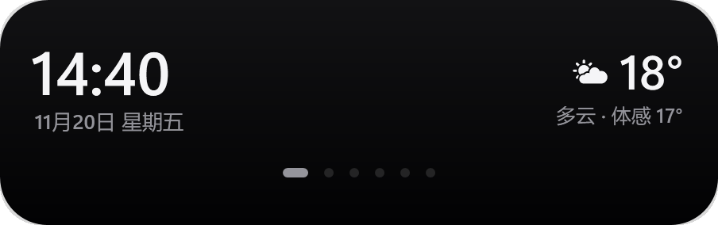
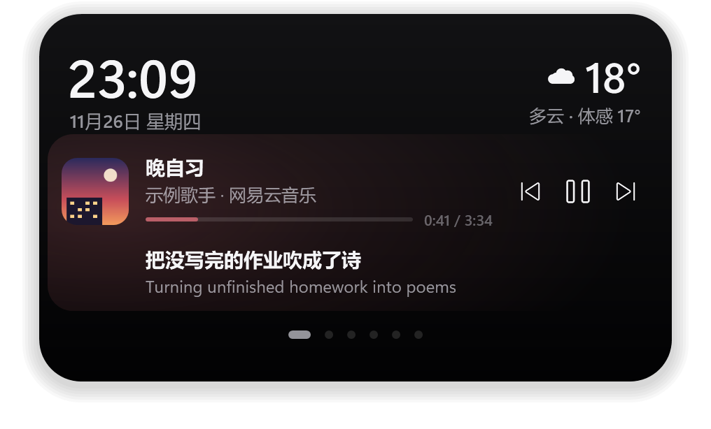
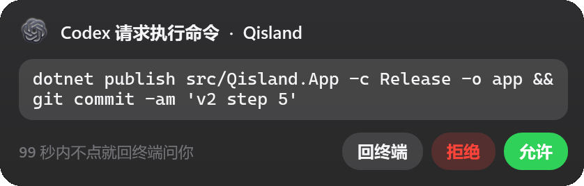
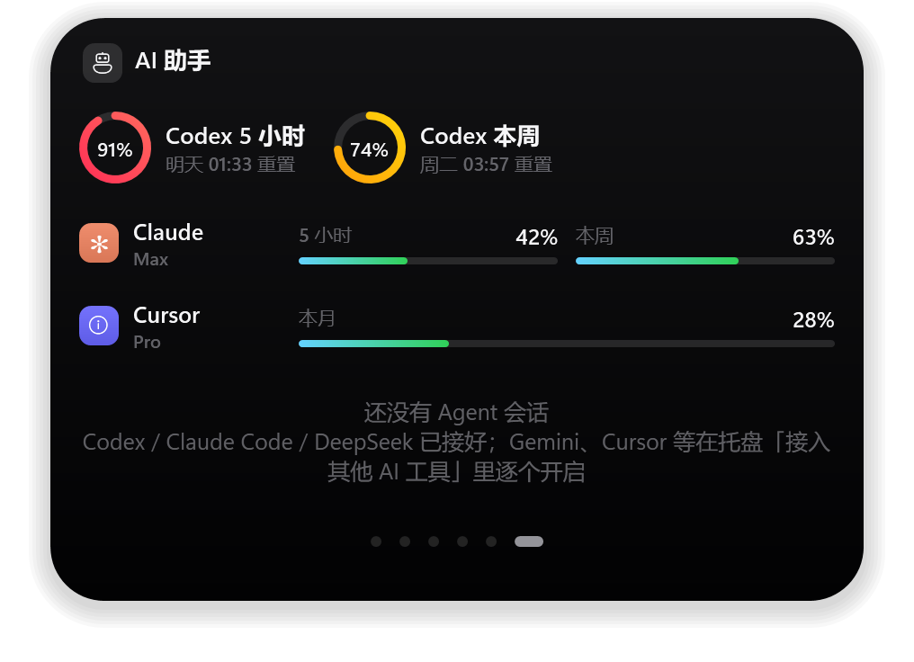
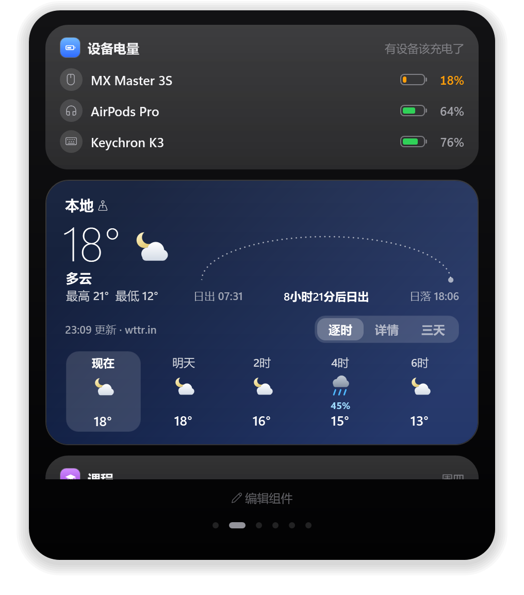
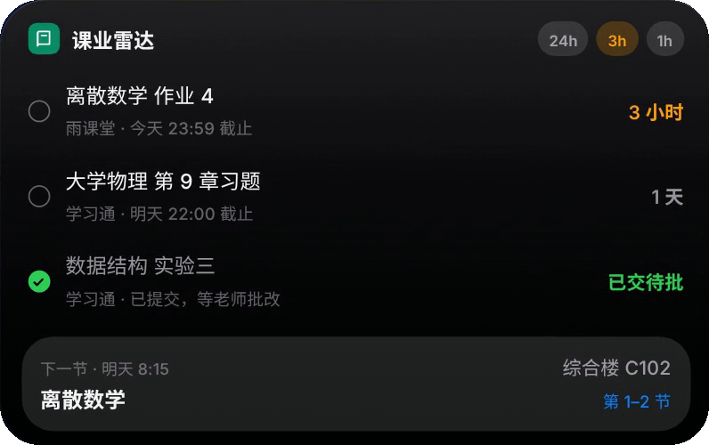
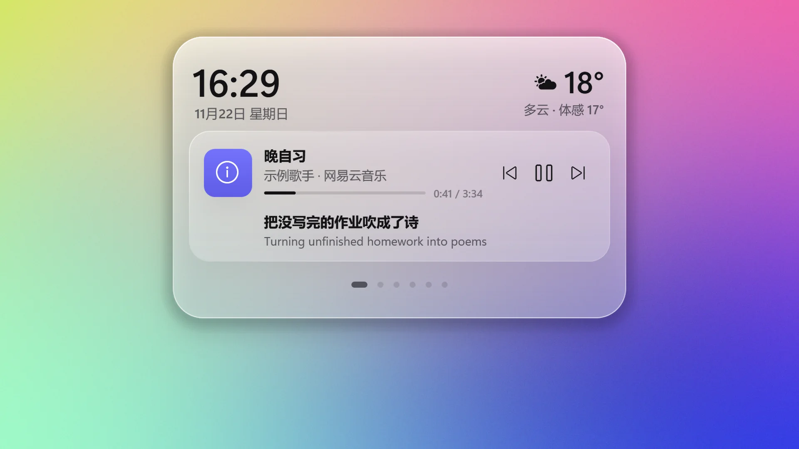
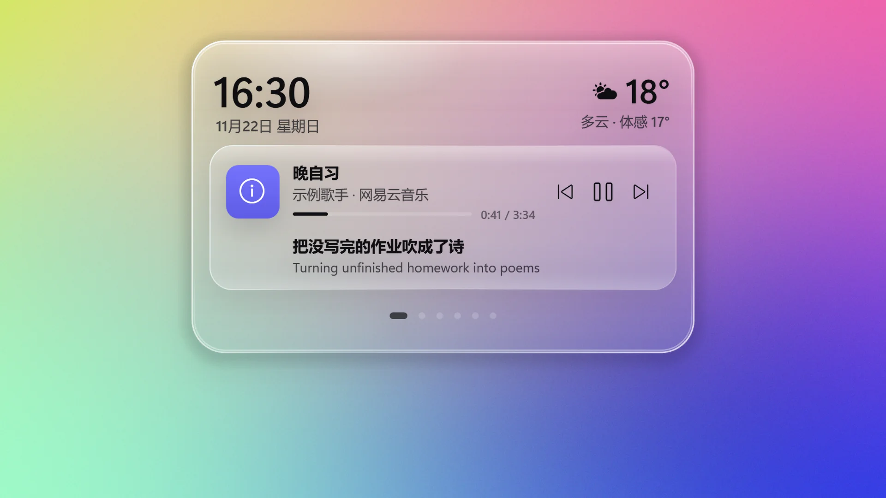
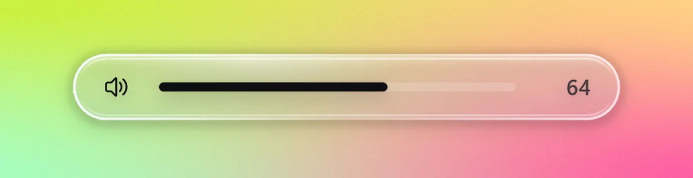

本机 AI 工具额度
Codex、豆包之外，可读 Claude Code、Cursor、Gemini CLI、Kimi Code 已登录时存在本机的令牌查用量，过 70% / 90% 各提醒一次。接口没有公开文档，读不到就不显示；这四家还没用真实订阅账号验证过。
面向 Windows 开发者与学生的轻量原生灵动岛。平时只是时钟；AI 命令审批、额度、验证码、歌词、作业截止，抬眼就看到。
5.0.0Windows 10 / 11原生 .NET 8 · 可选自带运行时开源 · MIT
一颗胶囊
常驻但不打扰：胶囊以外的地方照常点击，全屏看视频、打游戏时它自动让开。点岛上任何一条，直接回到来源软件。

正在播放
接入系统媒体控制的音乐软件和浏览器视频，网易云等都行。封面、进度、歌词都在岛上，暂停、切歌不用翻出播放器。4.3 起卡片会从封面取一层柔和的主色，进度条跟着变；歌词自带逐字时间时（酷狗本机歌词、增强 LRC）逐字高亮。

AI 编程助手
Codex 和 DeepSeek Harness 要执行命令时，岛上展开命令全文，允许或拒绝点一下就行。Claude Code 等你确认时，岛上只弹出等待提示。

dotnet test tests/Qisland.Core.Tests
示意演示，不会执行真实命令；超时自动交回终端。
4.3 新增
这几项都在设置里单独开关；会读本机令牌或邮箱的默认关，要你自己打开。
Codex、豆包之外，可读 Claude Code、Cursor、Gemini CLI、Kimi Code 已登录时存在本机的令牌查用量，过 70% / 90% 各提醒一次。接口没有公开文档，读不到就不显示；这四家还没用真实订阅账号验证过。
只读收件箱，新邮件里的验证码直接上岛、一键复制；不标已读、不删不移，授权码存在 Windows 凭据管理器。目前只用模拟服务器测过。
蓝牙鼠标、键盘、手柄、耳机的电量，掉到 20% 和 10% 提醒；读不到电量的设备不显示。


5.0 新增
不写代码就能编排胶囊、换主题；想要新卡片，从插件市场装一个，或者照着规范自己写一个 plugin.json。
收起的胶囊和组件页都能拖动编排、实时预览；theme.json 主题包只写想改的字段，导入时校验颜色和对比度，附带三套官方主题。
L2 安全卡片只是一个 JSON，不运行代码，只能访问声明过的至多 3 个 https 域名；L3 高级插件会运行本机程序、没有沙箱，启用前单独确认。
6 个官方插件和 3 套主题内置离线可装。在线索引和撤销名单都要过 Ed25519 验签，被撤销的插件自动停用并写明原因；第三方源一直标着「未验签」。
除了两个 zip，还有一个不要管理员权限的安装包：默认装到用户目录，可选桌面快捷方式和开机自启，卸载时默认保留你的设置。
官方插件索引仓库还没上线，市场目前只显示内置目录；Setup.exe 的安装、升级、卸载还没逐项手动点验，遇到问题欢迎提 Issue。
课业雷达
学习通、雨课堂扫码登录，只读作业截止时间。截止前 24、3、1 小时各提醒一次，交了就不再吵。导入课表后，岛上还会告诉你下一节课在哪。

日程与会议
订阅 .ics 日历，会议开始前提醒，识别到会议链接就能一键入会。
已识别会议链接
有程序在用麦克风或摄像头时，时间旁会亮一个小圆点。
通话中显示时长，点一下回到通话窗口。专注计时期间，其他通知先收着。
本机推送接口
本机 http://127.0.0.1:9840，只接受本机连接。脚本、CI、WSL 都能往岛上推卡片，同一个 id 再推就是更新——进度条就这样一格格往前走。
POST /v1/island/push
支持进度条、优先级、点击跳转
/v1/island/push推送或更新卡片，必填 title；可选 progress、type、priority、duration_seconds、open_uri/v1/island/push/{id}收回卡片/v1/agent/{来源}Agent hook 事件/v1/status健康检查/v1/perfCPU、内存、帧率、各监听器的事件计数换个手感

磨砂玻璃
液态玻璃托盘或设置里切换屏幕边缘，带弹簧动效。
「磨砂玻璃」用 Windows 系统合成的背景模糊；「液态玻璃」中间几乎透明，左上镜面亮边、边缘一圈淡磨砂，岛里的卡片和按钮也是同一套样式。岛可以停在顶部、左侧或右侧，带弹簧动效。
还有这些
全屏时岛自动让开，名单里的程序在前台时也会让开；把鼠标推到岛正上方的屏幕顶边停一下，或按 Ctrl+Alt+Q，就能把它叫回来。按 Ctrl+Alt+Shift+Q 锁定点击穿透，岛照常显示但不再挡鼠标。天气、待办、剪贴板、课程等小组件，开哪些、怎么排自己定。

按下 Caps Lock 时，岛上会提示现在是大写。
常驻，但不打扰
.NET 8 / WPF 原生程序，各类监听靠系统通知驱动，不轮询；胶囊以外的地方照常点击。
CPU 持续偏高时自动降到 60 fps、频谱静止、玻璃少截屏，回落后恢复。
隐私
宣传片
到 GitHub Releases 下载 Qisland-版本号-full-x64.zip（自带运行时，约 80 MB）；已装 .NET 8 桌面运行时的可以选小的 Qisland-版本号-win-x64.zip（约 9 MB）。
放到一个你有写权限的文件夹，自动更新要用。5.0 起也可以下载 Qisland-版本号-Setup.exe 一路安装，不要管理员权限。
双击 Qisland.exe，屏幕顶上就多了一座岛。用小包时如果提示缺少 .NET 8 桌面运行时，按提示安装，或者换自带运行时的包。
5.0.0 · Windows 10 / 11（x64） · MIT 许可，开源免费